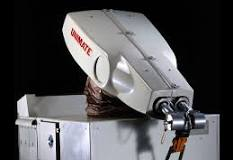

1.2 THE MECHANICS AND CONTROL OF MECHANICAL MANIPULATORS
1.1 BACKGROUND
The history of industrial automation reveals a strong link between advancements in automation methods and global economic shifts. Industrial robots, which became distinct tools in the 1960s, along with technologies like CAD and CAM, have driven transformations in manufacturing automation. These systems have paved the way for ongoing, unpredictable changes in how industries operate. In North America, the adoption of robots surged in the early 1980s before slowing briefly, yet has grown steadily since. Robotics now plays a critical role in manufacturing, largely due to declining costs and enhanced capabilities, allowing companies to cut labor expenses significantly.
Industrial robots have revolutionized manufacturing by performing tasks that are not only cost-effective but also safer and sometimes impossible for humans. The cost of robotic technology is dropping, while the price of human labor rises, making robots an appealing choice for industrial tasks. By 2025, robots are projected to reduce labor costs by 16% on average. Historically, robots date back to ancient Greece, but industrial robotics took off with the introduction of Unimate in 1961, the first industrial robot used on General Motors' assembly line. Since then, robots have continuously evolved, positioning automation as a cornerstone of modern industry.

- first industial robot
1.2 WHAT IS ROBOT
Despite the growing integration of robots into various fields, including healthcare, there is no universally accepted definition that covers all forms of robots.
Generally, a robot is considered a mechanical or virtual agent, often with electromechanical components, that is programmed via a computer system. The programming allows it to perform tasks in a way that may appear as if it has independent intentions or represents a human agent. While this description is broad, it highlights several key features that many robots share:
Artificially Constructed: Robots are non-natural entities, either physical or virtual, created through engineering.
Environmental Perception: Many robots possess sensors that allow them to understand and react to their surroundings.
Interaction with the Environment: They often have the ability to manipulate objects or navigate within a space.
Programmability and Intelligence: Robots can be reprogrammed and may demonstrate varying levels of intelligence.
From a more standardized perspective, the International Organization for Standardization (ISO 8373) defines an industrial robot as "an automatically controlled, reprogrammable, multipurpose manipulator, programmable in three or more axes, which can be either stationary or mobile" and is primarily used in automation applications.
For the medical applications context, it’s also relevant to mention service robots. Unlike industrial robots, service robots are designed to interact with humans and assist with healthcare, rehabilitation, and surgery. This category often includes robotic systems that provide high precision and aid in minimally invasive procedures, making them crucial in modern medical sciences.
1.3 KEY COMPONENTS OF A ROBOT
1.3.1 Mechanical Structure of Robots
In the context of medical robotics, the mechanical structure is a critical component that dictates the robot's design, flexibility, precision, and range of motion. The mechanical design must be carefully tailored to meet the stringent requirements of medical applications, where safety, dexterity, and minimal invasiveness are paramount.
1.3.1.1 Manipulators and Joints
Medical robots often incorporate highly articulated manipulators designed to mimic human arm movements. These manipulators typically consist of:
Revolute Joints: Allow rotation around an axis, providing greater flexibility and precision. These are commonly used in surgical robots to enable intricate movements.
Prismatic Joints: Provide linear motion, which can be beneficial in applications like robotic prosthetics, where extending and contracting movements are necessary.
Spherical Joints: A spherical joint allows three rotational degrees of freedom (pitch, yaw, and roll), similar to a human shoulder joint. It can rotate in multiple directions, enabling a wide range of motion. In robotic arms used for ultrasound imaging, spherical joints help navigate around the patient’s body, allowing comprehensive scanning without repositioning the arm.
Cylindrical Joints: A cylindrical joint combines one prismatic (linear) and one revolute (rotational) degree of freedom. This allows the joint to move in a straight line while also rotating around an axis. In a robotic exoskeleton, cylindrical joints help provide the dual motion needed for arm support, combining linear lifting with rotational movements.
Planar Joints: Planar joints allow movement in a two-dimensional plane, typically involving sliding and rotational motions within the same plane. In medical lab automation robots, planar joints enable the precise movement of tools and instruments across the workspace.
Universal Joints: A universal joint allows rotational movement around two perpendicular axes, giving two degrees of rotational freedom. It is less flexible than a spherical joint but simpler and more robust. In robotic systems used for orthopedic surgery, universal joints can provide stable and precise movement when drilling or cutting.
1.3.1.2 End-Effectors
The end-effector is a critical component in robotic manipulators, functioning as the "tool" or "hand" of the robot. In the context of medical robotics, end-effectors are highly specialized to meet the unique demands of various medical applications, ranging from surgical tools to rehabilitation devices. An end-effector is the device attached to the distal end of a robotic manipulator, designed to interact directly with the task environment. The type of end-effector used is typically tailored to the specific application and can include:
Grippers: Grippers are mechanical devices designed to grasp and hold objects. In medical robotics, they are often used for handling instruments or manipulating tissue with precision. Grippers widely used in surgical robots for tasks like holding suturing needles or handling delicate tissues without causing damage.
Surgical Tools: These end-effectors are specifically designed to perform surgical tasks, such as cutting, suturing, or cauterizing tissues. This items utilized in minimally invasive surgeries, such as laparoscopic or robotic-assisted surgeries, where precision and control are paramount. SOme type of this toold are Scalpels, needle drivers, or forceps designed for precision tasks. One of interesting example of this type of End-effector are Electrosurgical Instruments. Electrosurgical instruments deliver electrical currents to cauterize or cut tissues, minimizing bleeding.
Sensors and Feedback Devices: These end-effectors are equipped with sensors to provide tactile, force, or visual feedback to the surgeon or operator. These type of end-effectors are vital in surgeries requiring delicate manipulation, where feedback on force and pressure can prevent tissue damage. A title that we discuss about it in this course is haptic that is related to this section and is one of the good example about this type of end-effectors.
Specialized Devices: These type highly customized devices designed for specific medical tasks that standard tools cannot perform. Biopsy needles that used for extracting tissue samples with minimal invasiveness is these type of end-effectors.